Experimenteren met oude gewoontes
Wat is de toekomst van het ambacht?
ONDERZOEKSVRAAG
Hoe heeft het ambacht zich geëvolueerd door de jaren heen en hoe zal dat in de toekomst zijn?
INLEIDING
Als ik mijn werk moet gaan omschrijven komt het handgemaakte vaak naar voren. Ik hou er van om een complex idee uit te werken in iets fysieks, iets wat ik met mijn handen heb gemaakt, iets wat je kunt aanraken en het genieten van de foutjes die het werk onverwacht beter kunnen maken. Ik krijg al hoofdpijn als ik ook maar aan coderen denk, je kunt dus wel stellen dat ik ambachtelijk werk.Ondanks de hoofdpijn, vind ik de moderne technische mogelijkheden toch erg interessant. Ik merk dat er iets ontzettend moois uit kan komen en ooit komt er een dag dat ik mij daarin ga verdiepen, het is bovendien de toekomst, of toch niet?
Als grafisch ontwerper die graag met haar handen werkt vraag ik me af wat ambacht nou precies is. Met ambacht bedoel ik niet de ‘geiten wollen sokken’ breisels van je tante, maar het ambacht op een hoogstaand en geschoold level.
De gemaakte ambachtelijke kunstwerken van 200 jaar geleden zijn al snel knap gemaakt, dat is vanzelfsprekend want er waren toen nog geen machines. Alles moest toen wel met de hand worden gemaakt. Ambachtelijke kunst bestond nog niet. Of was alle kunst ambachtelijk? Wat voor invloed heeft de technische revolutie op het ambacht?
Is technologie zo fascinerend en boeiend in al zijn mogelijkheden dat het ons leidt naar de “verkeerde richting”? Er gaat iets essentieels verloren als je niet kunt voelen of ervaren wat je bij een handgemaakt product wel kunt. Kan de computer deze gevoelens vervangen?
AMBACHT WAS WAT HET WAS
1.1 Toen ambacht nog “gewoon” was
Ambacht was vanaf de Middeleeuwen voor de burgers en had een economische rol. Je had toen geen ambachtslieden zoals we die nu kennen, maar men was lid van een gilde.Een gilde was rond de Ancien Régime 1 een belangenorganisatie van mannen met hetzelfde beroep. Hierin werd ervaring en kennis uitgewisseld, niet in de vorm van kunst maar als dienaar om zo hun stad in goede conditie te houden.
De regels van het ambachtelijke gilde, door heel Europa, bestonden uit twee standaarden; het exclusieve recht van de leden om bepaalde specifieke producten te produceren en de mogelijkheid voor het trainen van nieuwe ambachtslieden.
Een groot nadeel van de gilden was dat de eeuwenoude werkwijzen door de omkopende werking van de monopolie 2 niet vernieuwd of veranderd mochten worden. Deed je dit wel, werd je verbannen en moest je een ander beroep kiezen.
Gelukkig had het lid zijn van een gilde ook zijn voordelen. Iemand die lid was, was verzekerd van sociale zekerheid en werd ondersteund als hij bijvoorbeeld ziek werd. Naast dat de gilden grote invloed hadden op de economie zijn er verschillende visies over hoe zij effect hebben gehad op het leven nu. Voor sommige economen en historici was dit een negatieve bijdrage. Gilden waren over het algemeen zeer conservatief en van vernieuwingen moesten ze dus niets weten. Hierdoor werd de modernisering in Europa sterk vertraagd. 3
Je kunt dus stellen dat het ambacht rond deze tijd niet veel met kunst te maken had, maar stond voor bijvoorbeeld stratenmaker of een schoorsteenbouwer. Je zou kunnen zeggen dat leden die uit de gilden werden gezet, meer trekjes hadden voor het maken van kunst. Zij waren immers degene die wilden experimenteren en zich niet wilden houden aan de standaarden en regels van een gilde.
Het afschaffen van de gilden, in 1818, werd als een van de belangrijkste redenen genoemd van de sociale kwestie 4 in de negentiende eeuw die weer het gevolg was van de industriële revolutie.
1.2 De industriële revolutie
De reden van de industriële revolutie was de sterke bevolkingsgroei, de 18e eeuw.Door deze groei ontstond er een enorm aanbod aan arbeidskrachten. Ook waren er nieuwe en efficiëntere productiemethodes nodig voor de verzorging van vele mensen. Stoommachines, machinale weefgetouwen, textielfabrieken en ijzerfabrieken schoten als paddenstoelen uit de grond. Arbeidsdorpen werden al snel steden door de enorme toestroming van arbeidskrachten. Maar door deze toestroom waren de arbeidsomstandigheden slecht, de nieuwe arbeiders moesten hun tijd doorbrengen in vochtige kelders en de zogenoemde arbeidskazernes. Niet alleen mannen, maar ook vrouwen en hun kinderen moesten onder slechte omstandigheden werken en leven.
Er was een constante dreiging van werkloosheid en honger. Vaak kwamen de arbeiders in opstand en probeerden tevergeefs de industriële revolutie tegen te houden.
De industriële revolutie was het begin van het onderscheid tussen ambacht en massaproductie.
1.2.1 De Industriële revolutie met betrekking tot het ambacht in kunst
Naast het feit dat de arbeidsomstandigheden zo slecht waren en het ambacht niet meer nodig was, werden mensen, vooral kunstenaars, kritisch over de voordelen van het ambacht.Zij waren van mening dat de massaproductie voor mindere kwaliteit zorgde in vergelijking met wat er met de hand gemaakt kon worden. Wat er gebeurde was dat er een pro-ambacht beweging tot stand kwam en rond 1900 bereikte deze zijn eerste hoogtepunt. Terwijl er voor miljoenen mensen betaalbare producten beschikbaar kwamen, die voortkwamen uit machines, begon de Arts & Crafts beweging. 5 Onder anderen bestaande uit William Morris, John Ruskin en Frank Lloyd Wright, die als protest handgemaakte kunstvoorwerpen kochten en maakten. De leden van de Arts & Crafts beweging waren visionairs van een leven dat verrijkt was met kwalitatieve, ambachtelijke producten en waren voorstanders voor een beter productieproces en leefklimaat. Hun visie was dat producten niet gemaakt moesten zijn door de dictatorschap van machines die gebaseerd zijn op protocollen, regels, en bestaande modellen, maar zij waren van mening dat ze bijdroegen aan een verziekte atmosfeer in de stadsomgeving. Ze wilden een wereld bestaande uit mooie en vooral nuttige kunst, kunst dat voortkwam uit kunst en arbeid. 6
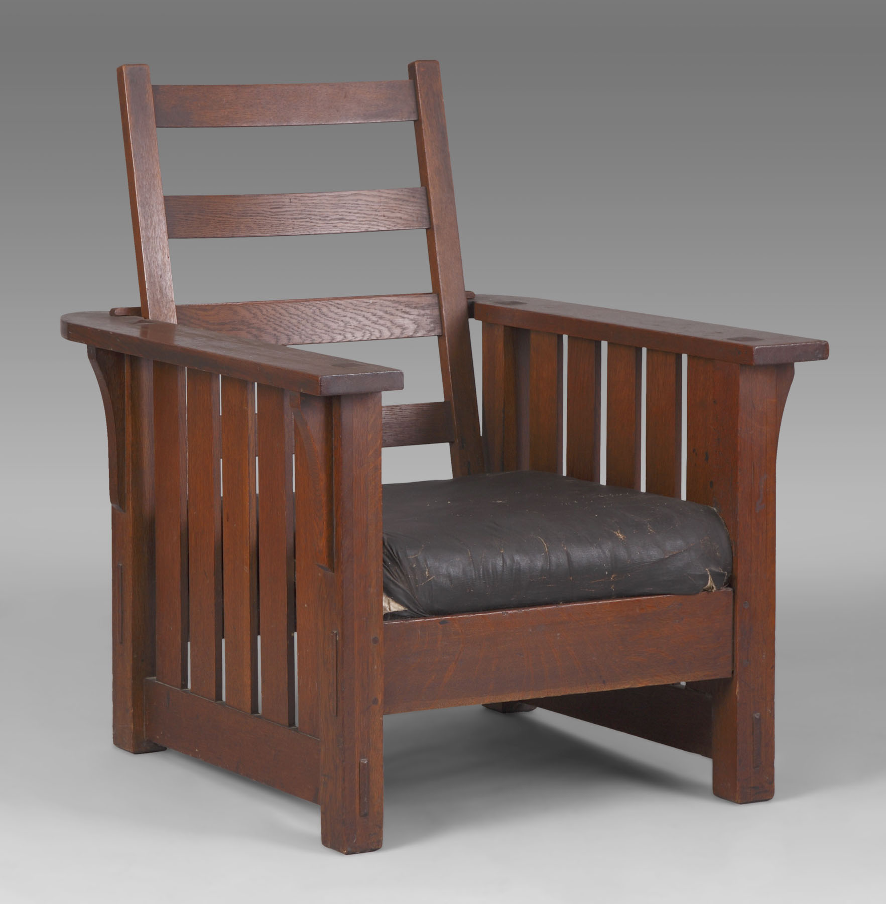

1.3 het ambacht was gered, maar waarom moeten we hem nu nog behouden?
Arjo Klamer, hoogleraar culturele economie aan de Erasmus Universiteit in Rotterdam, heeft zich samen met een groep onderzoekers verdiept in de Nederlandse ambachts-economie en die daarbuiten. Ze kwamen tot de conclusie dat Nederland achter loopt in vergelijking met Duitsland met haar ‘maak-cultuur’ en Engeland die het creatief vakmanschap koestert.Vooral Japan heeft een levendige ambachtscultuur, want daar is ambacht een nationale trots. Iemand die een ambacht ‘meestert’ is een persoon met groot aanzien. Toch is er in Nederland iets aan het veranderen. Politici spreken al over het belang van vakmanschap en steeds meer instellingen, zoals de VIE 7, zetten zich in om deze te behouden. 8
Onze belangstelling van ambachtelijke producten groeit nu al meer dan tien jaar, zelfs de overheid bemoeit zich er nu mee. De reden waarom de overheid het ambacht wil stimuleren, is de voorzichtige omkeer van de maakindustrie in Nederland. Wat nu vooral terugkeert is een meer gespecialiseerde, ambachtelijke en kleine creatieve maakindustrie. Het probleem is wel dat de hiervoor benodigde vakmensen ontbreken en daarom moet het vakonderwijs worden gestimuleerd. 9
“Het ambacht moet het respect en de waardering van weleer terugkrijgen. Ambacht moet weer hip en modern gevonden worden.”10
Er zijn steeds meer kunstenaars die interesse tonen in het ambacht, zowel schilders als ontwerpers. Langzamerhand zal duidelijk worden dat goed ambachtsschap niet alleen essentieel is voor een kwalitatief hoogstaande samenleving maar ook voor de economie.
1.4 De waarde van het ambacht
“we zien een interessante dynamiek: duizenden jaren geleden schreven ze op stenen die duizenden jaren bleven bestaan. Honderden jaren geleden in boeken die honderden jaren blijven bestaan. En tien, twintig jaar geleden schreven ze dingen in computermedia die er nu al niet meer zijn. Veel kleitabletten zijn er niet meer. We weten niet wat we niet hebben gezien, en er is veel beschreven papyrus verloren gegaan en de bibliotheek van Alexandrie11
is meermalen afgebrand. Veel dingen daarvan krijgen we nooit meer terug. Er gaan altijd dingen verloren. Het interessante van de huidige technologie is dat we zeker weten dat het verloren gaat.”12
In de Tegenlicht uitzending ‘Digitaal Geheugenverlies’, 13 stelt Alexander Rose, directeur van de Long Now Foundation 14, aan de kaak dat er een aantal duidelijke voorbeelden zijn van het negeren van het verleden. Een voorbeeld hiervan is dat na de tsunami in Japan stenen van honderden jaren oud met de inscriptie ‘Bouw geen huizen onder dit niveau’ waren gevonden. Uiteraard is daar wel gebouwd. Dit is volgens Alexander Rose pure arrogantie van de moderne technologie omdat ze dachten dat de huidige dijken sterk genoeg waren. Hierin zie je dat een oude techniek met de toekomst probeerde te communiceren maar compleet werd genegeerd.
In Richmond, Californië staat een enorme loods waar ze per maand tussen de 100.000 en 250.000 boeken binnenkrijgen die ze opslaan om ze te digitaliseren, door middel van ze in te scannen. Ze zorgen ervoor dat de boeken digitaal levensvatbaar blijven. Dat houdt in dat ze boeken vanuit technisch oogpunt verbeteren naarmate standaarden veranderen. Ze mogen niet verouderd raken. Ze mogen niet verdwijnen omdat de digitale techniek verandert.
Twee voorbeelden van het ambacht die absoluut niet verloren mogen gaan omdat ze zoveel vertellen over de geschiedenis en door de technologie van nu zelf historische objecten zijn geworden.
1.5 Maar wat is ambacht nu?
Iedereen, stedelingen in het bijzonder, heeft ooit wel eens geprobeerd om een ‘last minute’ afspraak te maken met een loodgieter of dakdekker. Zodra deze specialist zijn werk heeft gedaan, bijvoorbeeld het dichten van een gat in het dak, is hij klaar, dat is namelijk zijn werk.
Ik vraag me af of dit nog steeds geldt als een vakmanschap, als een ambacht. Of is het een gestandaardiseerde handeling? Wat betekent het eigenlijk om een ambachtelijk vakman te zijn in de eenentwintigste eeuw? In grafische termen: hoe reageren we wanneer we niet in staat zijn om een ontwerp over te brengen op een computer of machine?
Richard Sennett, schrijver van het boek The Craftman 15, zegt dat vakmensen als timmerlieden en laboranten hun werk met overgave voltooien en altijd goed willen doen voor hun eigen bestwil. Dus is echte ambacht je trots voelen over het werk wat jij hebt gemaakt? Maakt het niet meer uit of het gemaakt is met de handen of iets wat voortkomt uit de computer?
Sennett is van mening dat de voldoening van het fysiek maken van een product onderdeel is van het mens-zijn. Het is nodig om met vaste, bestaande materialen te werken om op deze manier geworteld te blijven in de materiële werkelijkheid om zo een evenwicht te creëren in een wereld waarin mentale voorzieningen worden overschat. Hij neemt een blik terug naar de percepties van de 18e eeuw, naar de Verlichting, een intellectuele stroming in Europa. Een beweging voor intellectuelen, met het doel om de wetenschap en het intellectuele, gebaseerd op alleen maar feiten, uit te wisselen. Dit was tevens het begin van de industriële revolutie. In zijn boek omschrijft hij dat ambachtelijke vaklieden het leveren van goed werk zien als een bron van het menselijk geluk.
Hij is van mening dat magische menselijke momenten, zoals het maken van fouten, niet na te maken zijn door een machine. Sennett maakt zich sterk voor de verloren ruimte van vrijheid. Dit zijn ruimten waarin ambachtslieden kunnen experimenteren met ideeën en technieken. Het maken van fouten is volgens hem een aandoening waarvoor mensen zullen moeten vechten in de moderne samenleving. 16
EIGENTIJDSE AMBACHT, DE TWEEDE INDUSTRIËLE REVOLUTIE
2.1 Ambacht is in
Deze toegenomen aandacht voor ambacht wordt veroorzaakt door een aantal trends.
Onder andere door de globalisering. Tegenwoordig kunnen we overal ter wereld dezelfde hamburger eten, bijvoorbeeld die van de McDonald’s, waardoor we juist de zelfgemaakte gehaktbal van onze oma herwaarderen. Ook is er een grote afstand van de natuur ontstaan. Dit komt voornamelijk door de massaproductie, de digitalisering en de verandering van het mediagebruik. We weten vaak niet meer wat echt is en wat niet. Daarom willen we weer terug naar het natuurlijke ‘echte’ product. De confrontatie met andere culturen leidt vaak tot angst en onwetendheid waardoor we het traditionele lokale leven veel meer waarderen dan voorheen. Natuurlijk heeft ook de economische crisis zijn sporen achter gelaten, waardoor we verlangen naar een simpeler vroeger. 17 Door deze gebeurtenissen zijn we weer met beide benen op de grond gaan staan en zoeken we bevestiging in kleinschaligheid, verbondenheid en eenvoud. Handgemaakt is eerlijk, kleinschalig, uniek en daarom menselijk.
Natuurlijk is het logisch dat deze vorm van ambacht op dit moment populair is, je ziet het overal, iedereen is er mee bezig. Overal op internet, televisie en in de kranten zie je artikelen en programma’s verschijnen die dit onderwerp op hun eigen manier aankaarten. Het ambacht is in.
2.2 Ambacht en kunst
Volgens Cornel Bierens, kunstenaar en schrijver, wordt de eenentwintigste eeuw een gouden tijd voor de ambachtelijkheid omdat de conceptuele en theoretische kunst zijn langste tijd heeft gehad. Kunst zal niet meer zo afhankelijk zijn van het erbij vertelde verhaal of filosofie. Het conceptualisme heeft zijn tijd gehad.
Hij beweert dat kunstenaars de kracht van het broodnodige maakwerk weer terugzien en zij hebben in deze tijd meer opties en gereedschappen tot hun beschikking dan ooit tevoren.
De uitbreiding en de technologieën van de camera en computer hebben volgens Bierens niet geleid tot de langzame dood van oude media als verf en het doek. Bierens refereert naar de opkomst van borduren en pottenbakken. Hij zegt dat deze terugkerende interesse voor oude technieken samen gaat met de omarming van nieuwe middelen als de 3D-printer. Hierdoor is het mogelijk om vrijwel alles zelf te maken. Met dank aan de financiële crisis lijkt de massa- industrie haar beste tijd te hebben gehad. Kleinschalige productie is nu aan de orde. 18
Kunstenaars en ontwerpers kijken weer naar de geschiedenis van hun ambacht, naar hun identiteit. Dit houdt in dat ze veel onderzoek doen naar regionale wortels en de ambachtelijke technieken die hierbij horen. Klakkeloos deze technieken overnemen is hierbij niet meer aan de orde. Het gaat nu vooral om het experimenteren met oude materialen en het herontdekken van oude technieken. Als kunstenaar of ontwerper ben je altijd opzoek naar wat nieuw en uniek is.
Door ons verlangen naar vroeger, de echtheid en originaliteit, willen we weten waar producten vandaan komen en hoe ze zijn gemaakt.
Helaas is dit echter alleen toepasselijk voor een kleine groep mensen, wat volgens mij tegenstrijdig is omdat het ambacht producten vertegenwoordigen die voor iedereen toegankelijk moeten kunnen zijn. Wat je nu vooral ziet is dat handgemaakte producten juist heel erg duur zijn.
2.2.1 Commentaar leveren
Grayson Perry
In het begin van deze zogeheten ‘ambachtelijke revolutie’ werd het ambacht vooral gebruikt om commentaar te geven.Een voorbeeld hiervan is het werk van kunstenaar Grayson Perry. Perry staat bekend om zijn sterk autobiografische elementen in zijn werk en het gebruik van zijn alter ego “Claire”.
Één van zijn bekende werken zijn zijn vazen. Deze vazen hebben de typische ambachtelijke klassieke vorm, maar met daarop schilderingen die de keerzijde van deze burgerlijke stijve uitstraling weergeven. 19
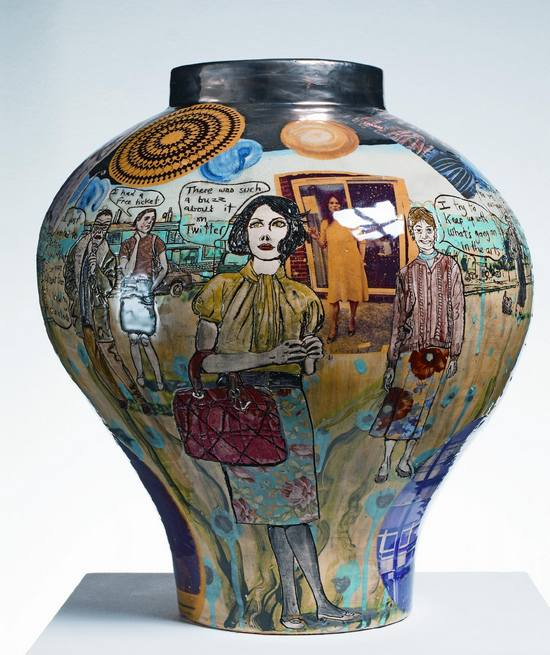 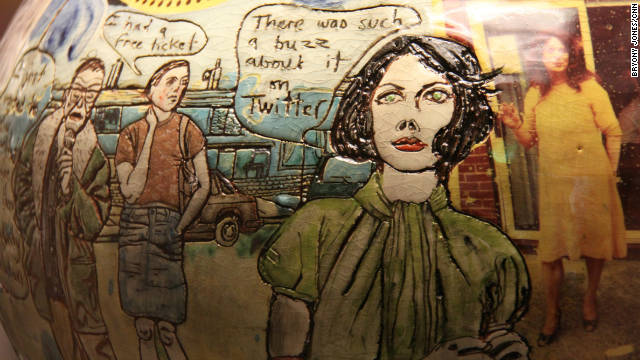
Berend Strik
Ook Berend Strik, een Nederlandse beeldende kunstenaar, geeft op dezelfde ambachtelijke manier commentaar. Strik is het bekendst om zijn, in de jaren 90 hervonden, geborduurde werken. Voor een mannelijke kunstenaar is borduren een interessante keuze. Hij past deze techniek toe op vooral gevonden materialen; foto’s uit familiealbums, zelfgemaakte foto’s en afbeeldingen uit tijdschriften. Passend bij de uitspraak van Cornel Bierens, dat ambachtelijk werk van nu geen inhoud heeft en niet conceptueel is, heeft Strik deze techniek gekozen omdat het geen handschrift laat zien. 20In zijn werk ‘Blue’ combineert hij porno met de dodelijk truttige associatie van het borduren. Overigens borduurt hij niet zelf, maar laat hij dat doen. Veel van zijn werken zijn in Hongarije gemaakt, het geboorteland van zijn vader.
Wat ik mij nu afvraag is, of het ook ambacht is wanneer je het ambachtelijke werk uit laat voeren door een ander. Gaat het dus alleen maar om het idee? 21

2.2.2 Mooie ambacht
Hella Jongerius
Commentaar leveren hoeft tegenwoordig niet meer. Ontwerp mag weer alleen mooi zijn. Voor de Nederlandse industrieel ontwerper Hella Jongerius is kunst te vrij en houdt ze van de grenzen die centraal staan in het ontwerpen. Waarom ze in het rijtje staat van ambachtelijke ontwerpers? Dat is onder andere omdat ze het liefst werkt met haar handen. Haar schetsen maakt ze zelden op de computer. Haar visie is dat het werk wat voortkomt uit haar handen veel “slimmer” is dan wat er voortkomt uit haar hoofd. De foutjes die je maakt tijdens het maken van proefmodellen zijn veel interessanter dan het schetsen op de computer waarbij alles al snel perfect is. Volgens Hella Jongerius maakt de kracht van het onverwachte, ongelukjes en de fouten die je maakt, het ambacht. Objecten die in detail nooit hetzelfde zijn. 22 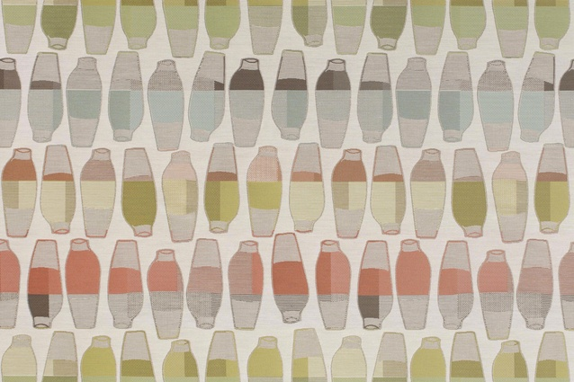
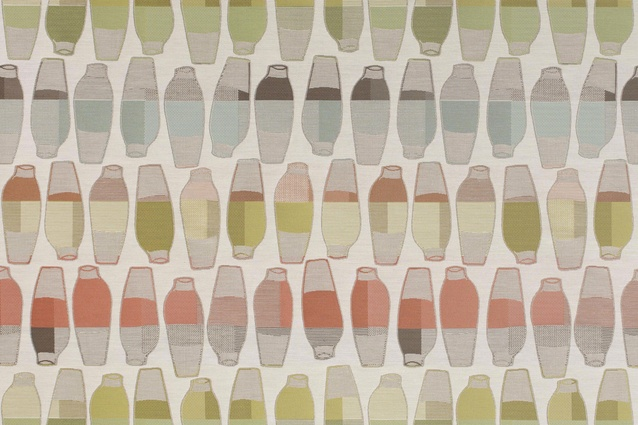 Veel werkplaatsen, zoals het Europees Keramisch Werk Centrum in Den Bosch en het Textielmuseum in Tilburg, merken op dat er een flinke toename is van niet-ambachtelijke opgeleide kunstenaars die vooral komen uit de mode, architectuur, schilderkunst en autonome sector. Deze hedendaagse kunstenaars willen niet meer terug naar het ambacht omdat de technische beheersing niet meer nodig is, zoals bij de traditionele kunstenaars.
Het is geen doel op zich. Het wordt nu meer gezien als een versterking voor het artistieke eindresultaat. 23 Ik geloof dat ik hiermee mijn vraag of ambacht, gemaakt door iemand anders ook ambacht is, beantwoord heb.
2.2.3 Oude gewoontes
De nieuwste trend onder ontwerpers is om oude gewoontes om te zetten naar nieuwe ambachtelijke technieken. Het gaat hierbij niet om wát de ontwerper maakt maar om hóe hij het maakt. Het conceptuele aspect van ontwerpen wordt vervangen door het onderzoeken naar nieuwe grondstoffen en experimenten met technieken.Wat we nu zien is een groep ontwerpers die zich interesseert in de technieken van nu en daarin experimenteert met oude, ambachtelijke materialen.
Lex Pott
De jonge ontwerper Lex Pott gebruikt dit experimenteren met oude ambachtelijke handelingen in zijn werk. Zijn werk komt voort uit de oorsprong van materialen als hout, steen en metaal. Voor één van zijn projecten, genaamd ‘Diptych’, gebruikt hij het natuurlijke, ambachtelijk product hout en combineert dit met de zandstraal techniek. Doordat bepaalde jaarringen van het hout lichter en poreuzer zijn en verschillen in hardheid, worden deze weggeblazen door de zandstraalmachine. 24 De harde jaarringen blijven bestaan waardoor er bij elk stuk hout een ander patroon ontstaat. De hoeveelheid van de harde en zachte jaarringen beslissen het uiterlijk van het werk. Iets ontstaat dus per toeval.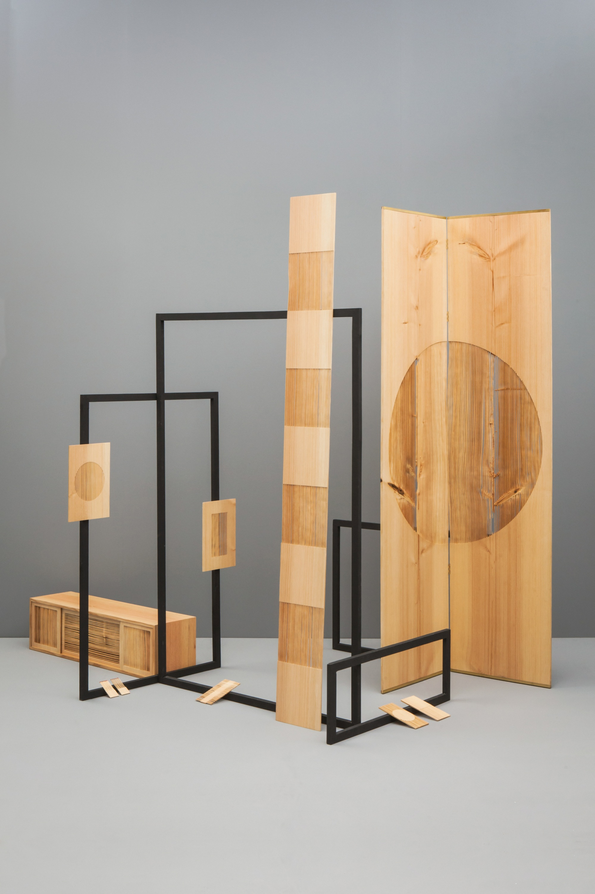 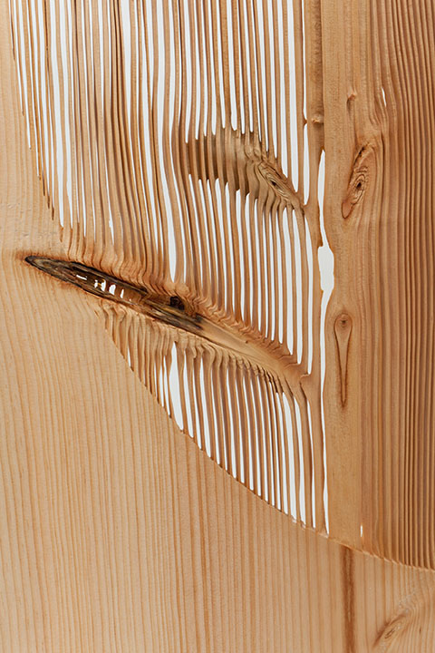
Mieke Meijer
Ontwerpster Mieke Meijer heeft een passie voor materiaal en detail. Dit is terug te vinden in het, door haar gemaakte, industriële autonome werk. Tijdens het maken van het werk ‘Materialism’ stond het onderzoeken naar industriële materialen zoals metaal en glas centraal. Ze heeft onderzocht hoe deze materialen er uitzien als ze met de hand worden gemaakt en laat zien hoe materialen vervormen wanneer ze op een andere, experimentele en vooral ambachtelijke manier worden behandeld. Materialisme is tot stand gekomen door het zelf gieten van materialen als glas, keramiek en metaal in mallen, waardoor de uitkomst telkens anders is. 25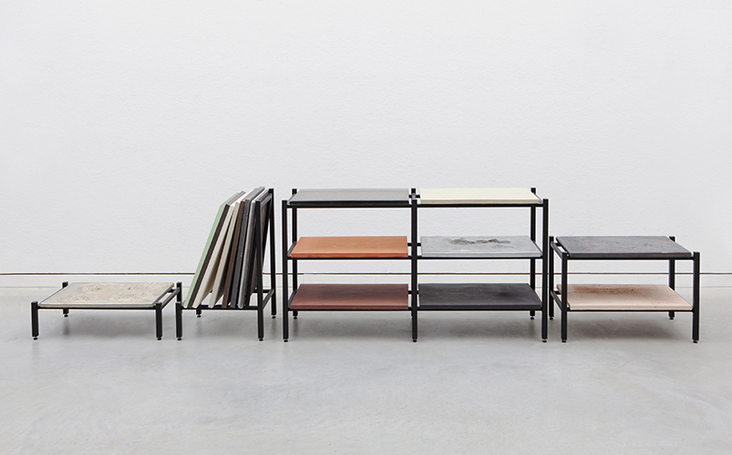 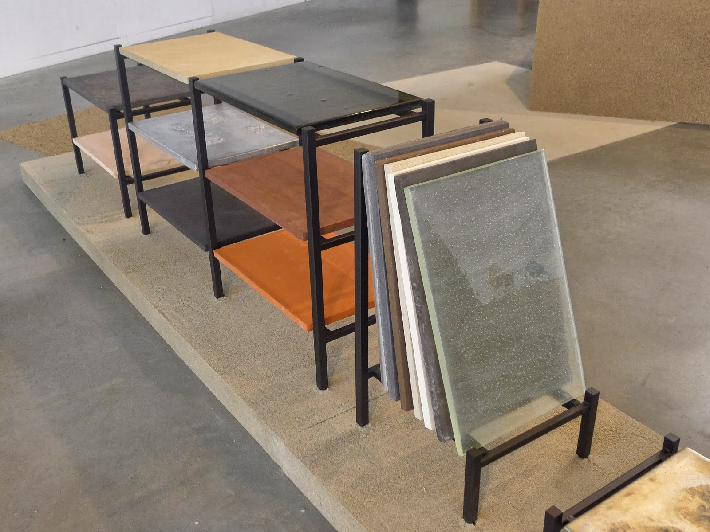
Kehinde Wiley
De in New York gevestigde beeldende kunstenaar, Kehinde Wiley, vervangt de blanke mensen uit heldhaftige, krachtige en majestueuze schilderijen, uit bijvoorbeeld de Renaissance, door zwarte en bruine mensen. Zijn doel is om op deze manier de gediscrimineerde Amerikaanse donkere mensen alsnog een glorieus verleden te geven. 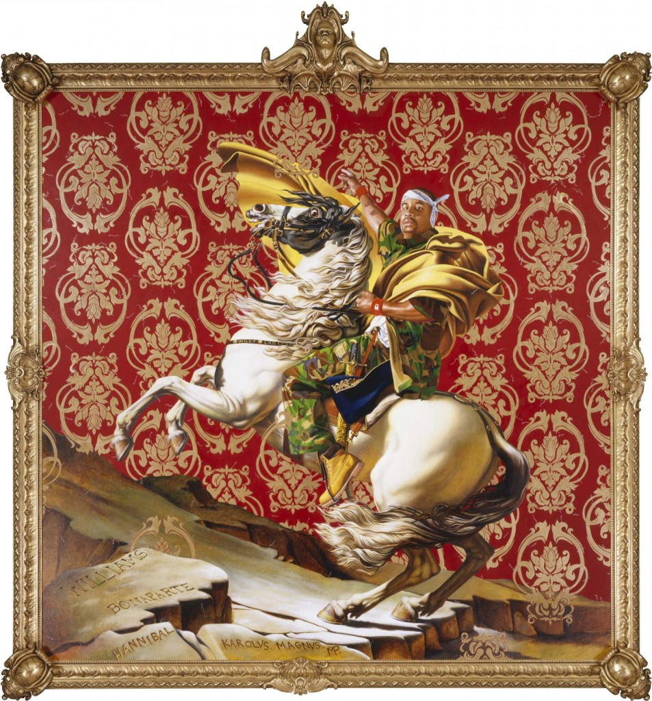
2.3 ambacht en grafisch ontwerp
Hansje van Halem
Grafisch vormgever en typograaf Hansje van Halem laat zich inspireren door traditionele kantklostechnieken. Op deze techniek heeft ze een lettertype gebaseerd genaamd de ‘Doily’. Deze letter is, net als bij het kantklossen, opgebouwd uit geografische en decoratieve figuren. Van Halem is erg geneigd om zeer gedetailleerde sierletters te ontwerpen die haar herinneren aan de sierlijke draden van kant. De letters zijn getekend met een fineliner en door gebruik te maken van een letter-grid, er is geen vast systeem in het tekenen. Het detailleren gaat zo ver dat ze voor elke letter meerdere versies heeft gemaakt, zodat nooit dezelfde ontworpen letter twee keer in één woord staat. 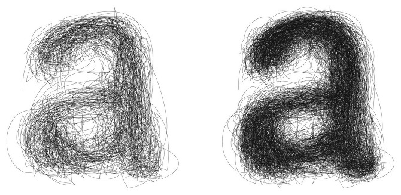
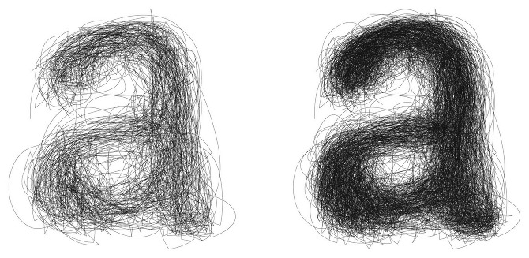
Karel martens
Grafisch ontwerper Karel Martens gebruikt de media van nu als inspiratie bron voor zijn werk. Hij misbruikt deze media en creëert hier een uniek ontwerp door middel van de letterpress en/of zeefdrukken. Wat opvalt in zijn werk is dat hij vaak zijn ontwerpen drukt op gebruikt papier centraal staan voor de massaproductie. De formaten van het gevonden papier bepalen de uiteindelijke opdruk. 26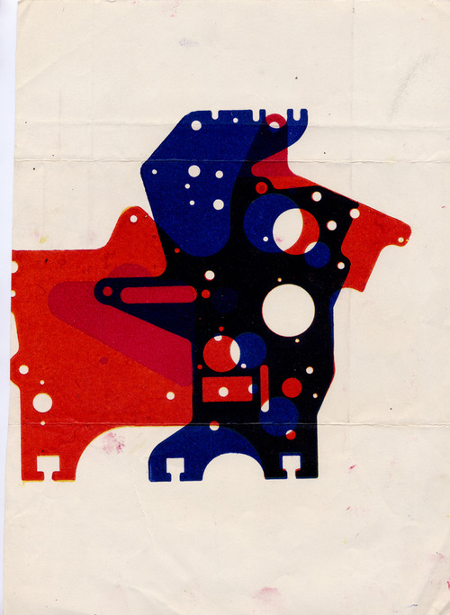 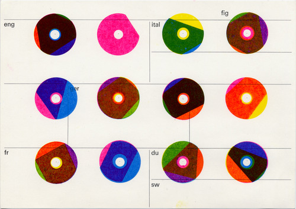
Apples iBooks
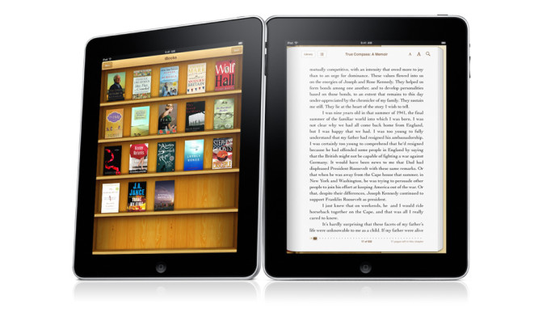Een ander voorbeeld is, dat we in plaats van het ambacht gebruiken als methode om iets te maken, dit gebruiken als visuele referentie voor een digitaal ontwerp. Hierboven zie je een traditionele houten boekenkast waar we meteen een associatie aan geven.
2.3.1 A23D
De letterpress is een van de oudste manieren van drukken en is een techniek waarbij gebruik wordt gemaakt van houten en loden letters. Bij deze techniek wordt niet alleen inkt overgebracht, maar ook een reliëf.Het feit dat er ongeveer een eeuw zit tussen de ontworpen letters van voor de eenentwintigste eeuw en die van nu is, volgens grafisch ontwerper Richard Ardagh, één van de redenen dat we niet meer geïnteresseerd zijn in dit medium. Wat is dus de toekomst van de letterpress, hoe kunnen we het voor deze tijd weer relevant maken? Gelukkig is hier een oplossing voor bedacht.
Je kunt zeggen dat de letterpress aan het evalueren is. Dit omdat we niet alleen de beperkte standaard loden letters gebruiken maar we kunnen nu ook zelf een eigen letter ontwerpen en deze door middel van de 3D-printer ontwikkelen. Door de komst van de 3D-printers zijn er veel meer mogelijkheden en nieuwe inzichten in het gebruik van oude machines als de letterpress. Hierbij is het ambacht de nieuwste vorm van printen gecombineerd met de aller oudste. Het voordeel is dus dat we in principe elke zelf ontworpen letter kunnen gebruiken maar we nog wel het gevoel hebben van ergens veel tijd in steken en iets creëren met onze handen op een traditionele manier. 27
Wat me hierbij ook opvalt is de samenwerking tussen de specialisten waar ik verder in hoofdstuk drie op in ga. Ardagh heeft voor het project A23D samen met een ontwerpbureau, specialisten in het printen van 3D-objecten en de letterpress studio, zelf een letterpress-letter ontwerp gerealiseerd.
Omdat door de 3D-printer veel detail mogelijk is en om het feit dat een 3D-printer de letter heeft uitgeprint, is het een ontwerp met een erg gedetailleerd 3D-effect geworden, een moeilijk proces wat bijna twee jaar heeft geduurd. Hiermee hebben ze hopelijk een nieuwe toekomst gecreëerd voor de letterpress, die toe te passen is op de wensen en bekwaamheden voor ontwerpers van vandaag de dag. 28
Waarom we de letterpress moeten behouden? Omdat je ziet hoe het is gemaakt, je kunt het reliëf voelen. Details die je niet krijgt door middel van alleen ontwerpen met de computer, dit maakt het ambacht zo speciaal.
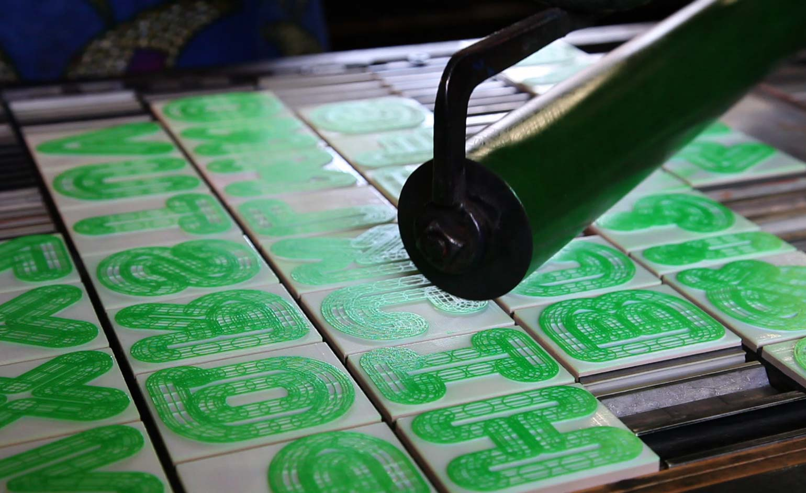 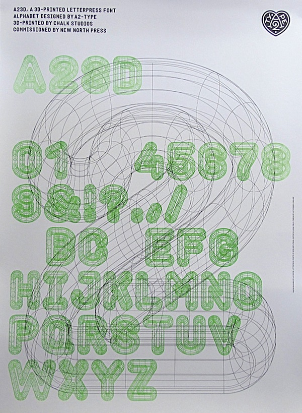
2.4 Toen Web 1.0 nog nieuw was
Web 1.0 is geweest en wordt gezien als oude internet esthetiek. Een prima inspiratiebron voor jonge ontwerpers van nu. Is dit ook ambacht? Wat hier gebeurt is dat er inspiratie wordt gehaald uit de jaren negentig. Zoals de titel van mijn scriptie al zegt; Experimenteren met oude gewoontes. Hier zijn overdreven kleurrijke graphics, jaren negentig lettertypes en afbeeldingen van virtuele werelden aan de orde. 29Een voorbeeld is het werk van kunstenaar Jon Satrom. Hierbij is een blog ontworpen in de stijl van het internet in de jaren negentig, toen het nog in zijn kinderschoenen stond. Hierbij is duidelijk te zien, dat met de toen heel veel voorkomende bugs, vormgegeven en geëxperimenteerd is door middel van glitch art, wat op dit moment door van vele andere ontwerpers veel aandacht krijgt.
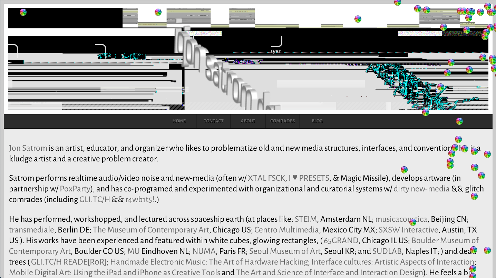 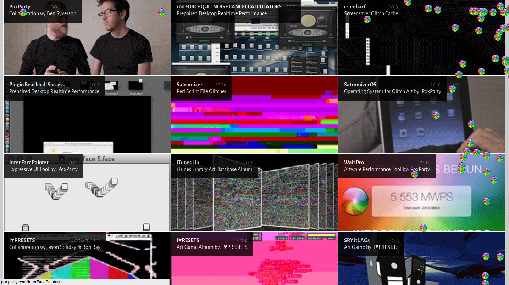
2.5 Ideeën zijn groter dan ambacht
Één ding is duidelijk. Er is een nieuwe dynamiek ontstaan tussen in de al lang bestaande vaste verhoudingen tussen vakmanschap en ontwerp, tussen individuele en industriële productie.ontwerp. Dit speelt niet alleen in de ambachtelijke sector, maar heeft ook invloed op de “high-tech” sector. Hierbij is grootschalige productie, net als bij het ambacht, niet de norm. De invloed van de traditionele technische kennis groeit alleen maar meer en meer. We kunnen op dit moment veel meer met de technieken, waardoor het ambacht ook is veranderd. 30 Een voorbeeld is een tapijt gemaakt van hout maar met de textuur van textiele weefstructuren. Dit is onmogelijk om met de hand te maken. De makers van dit product zijn hierin wel geslaagd door middel van allerlei softwarepakketten, 3D- en textielontwerp.
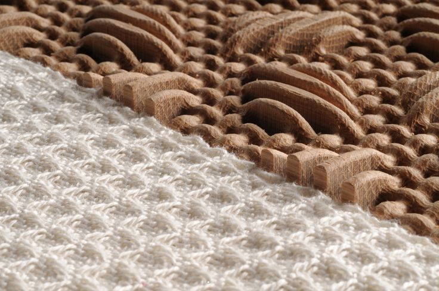
Ik vraag me af of het ambacht van nu, met de hand dingen maken en soms met behulp van moderne machines, niet langzaam evalueert naar alleen werken met machines, omdat die het op een gegeven moment beter kunnen. Wat heeft dat voor invloed op de waarde van het ambachtelijk product? Is het product dan nog wel ambachtelijk?
In het boek ‘Printing Things. Visions and Essentials for 3D printing’ 31, wordt in kaart gebracht dat ontwerpers niet langer uitwerkers zijn van het ontwerp maar alleen van het idee voorzien. De consument is op dit moment in staat om het ontwerp zelf uit te printen. Een uitspraak wat weer mijn vraag van hoofdstuk 2.2.2 beantwoordt, namelijk; is ambacht nog steeds ambacht als het door iemand anders is gemaakt, dus niet door de bedenker zelf?
Is technologie zo fascinerend en boeiend in al zijn mogelijkheden dat het ons leidt naar de verkeerde richting? Er gaat iets essentieels verloren als je niet kunt voelen of ervaren wat je bij een handgemaakt product wel kunt. Kan de computer deze gevoelens vervangen? 32
COMPUTER GEMAAKTE AMBACHT
3.1 Hoe worden wij beïnvloed door de technologie?
3.1.1 De schermzombies
“Onze kinderen lopen het risico om ‘schermzombies’ te worden. Met die forse claim komt de Belgische neuropsychiater en bedrijfsconsultant Theo Compernolle. Hij ziet dat in een groeiend aantal gezinnen tablets en Ipads als een verkapte babysitter gebruikt worden ‘omdat de kleintjes er zo lekker rustig van worden’. Maar daardoor missen ze een deel van hun ontwikkeling dat ze nooit meer in kunnen halen.”33
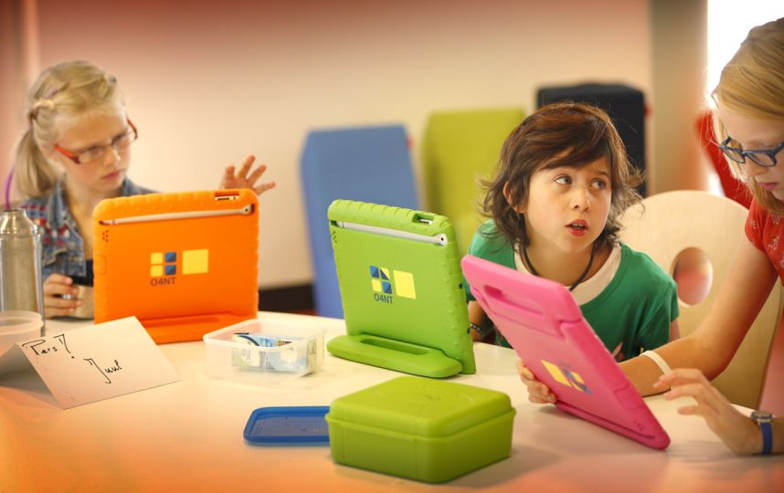
3.1.2 Generatie Y
De generatie Y, geboren in de late jaren tachtig, is altijd online. Zij is liefhebber van de voortdurende afleiding en het overspringen tussen werk en sociale media. Ze is er vaak van overtuigd dat ze goed zijn in multitasking en dat het geen negatieve uitwerking heeft op haar prestaties. Onderzoek toont aan dat de babyboomers (geboren tussen 1945 en 1955) en generatie X (geboren tussen 1961 en 1980), zich herinneren dat ze veel efficiënter waren voordat ze online gingen. Veel jongeren die aan het arbeidsproces beginnen hebben nooit ervaren hoe het is om met een aanhoudende en ongestoorde gerichte aandacht te werk te gaan. Zij zijn van mening dat deze ongestoorde aandacht verveling kan opbrengen. Ze willen juist afgeleid worden. 34Doordat de technologie zo in ons leven verweven is, worden we hierdoor bijvoorbeeld ook anders opgeleid. Onze kinderen krijgen nu les door middel van tablets en computers. Ik vraag me af of dit invloed heeft op hoe wij, ontwerpers, in de toekomst vormgeven, en ook wat voor invloed deze manier van lesgeven heeft op hoe creatief we in de toekomst zijn, hoe we naar ontwerp kijken.
3.2 Ontwerpers versus ingenieurs
Een ondergrondse strijd woedt tussen ontwerpers en ingenieurs. Onze toekomst staat op het spel. Althans, volgens kunstenaar en filosoof Koert van Mensvoort. In één van zijn essays 35 stelt hij de vraag of we terug moeten gaan naar grootmoeders tijd of de technologie moeten omarmen.Volgens Van Mensvoort is de impact van de nieuwe technologie in ons leven moeilijk weg te denken en slaat ontwerpen tegenwoordig op bits, atomen, neuronen en genen. 3D-printers worden steeds toegankelijker en steeds meer in ons dagelijks leven de normaalste zaak van de wereld. Het eten van een gekweekte hamburger is al werkelijkheid aan het worden, net als de mogelijkheden van het printen van orgaanweefsel. Nu duidelijk is waarom het ambacht zo populair is, staat het recht tegenover de technologische revolutie. De steeds complexer wordende technologie is zo in ons leven verweven dat we niet anders weten. Kijk maar naar de pinpas, die is niet weg te denken. Mensen die niet willen deelnemen aan deze technologische “vooruitgang” worden toch gedwongen om dat te doen. 36
Van Mensvoort zegt dat ontwerpers de neiging hebben om hun kop in het zand te steken in plaats van deel te nemen aan nieuwe technologieën. Ze trekken zich terug naar de “nostalgische comfortzone”.
“Designers continue to be the cheerful boys and girls who don’t bake the cake themselves, but only provide it with the icing. More and more frequently that icing tastes of parsnip, but it remains icing.”37
Het komt er dus op neer dat wij, in dit geval grafisch ontwerpers, ons niet willen verdiepen in de techniek als bijvoorbeeld het schrijven van code, we willen er alleen voor ontwerpen. Onze ontwerpen omzetten in code laten we aan de developer over. Hij vindt dit een slechte zaak, want:
“The nostalgic designers are like an eighteen-year-old girl who has closed her Facebook account and hung up a tablecloth at school with the title ‘Facedoek’, onto which she’s pasted all her photos. An extremely sympathetic act of resistance. Hip too. Art perhaps. But at the end of the day it remains a marginal gesture.”38 en
“Grandmothers’ time was not better, dear designer.”39 Logisch, hij geeft zelf toe dat hij niet kan ontwerpen:
“...it’s because of the teachers: sensitivity to form is nowhere to be found among the teaching staff. Myself included,..”40
Van Mensvoort vindt dit een enorme fout. Hij vindt dat ontwerp juist nodig is bij dit proces. Ingenieurs en developers zijn goed in dingen “werkend” maken, maar ze kunnen niet ontwerpen. Ontwerpen is een vak op zich, een vak waarin de zintuiglijke waarneming, intuïtie en sociaal-cultureel bewustzijn, basis dingen zijn en juist deze kwaliteiten zijn nodig bij het ontwerpen van onze technologische toekomst. 41
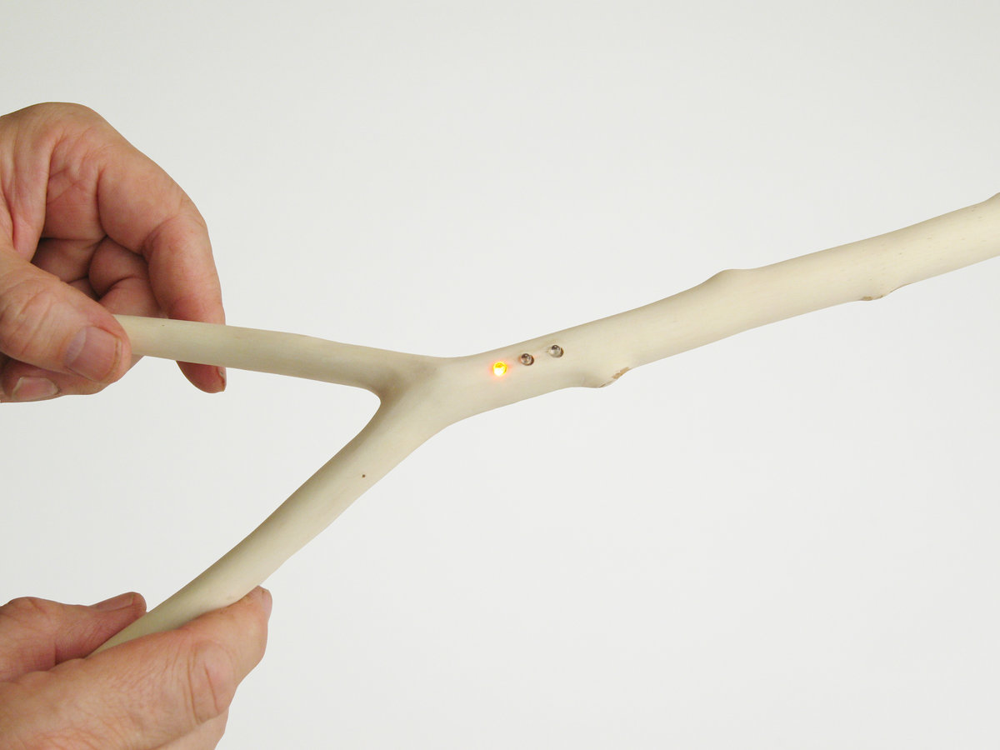 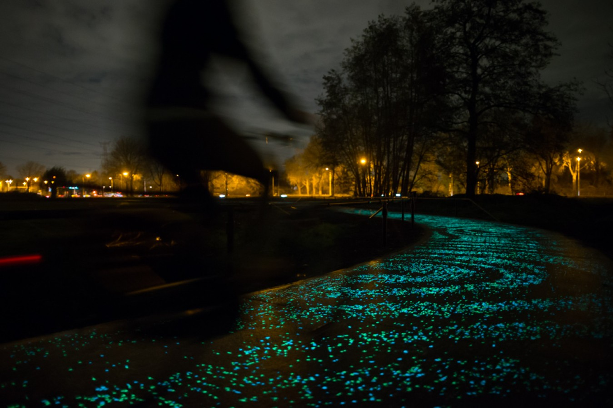
Wat er nu dus speelt is dat de huidige grafische ontwerper een strijd voert tussen het ontwerpen van nu en het werken met de coding. Wat ik persoonlijk merk is dat hier de meningen nogal over verdeeld zijn. Er zijn genoeg ontwerpers die zich al te graag in de data verdiepen terwijl er ook genoeg ontwerpers zijn die hierin helemaal niet geïnteresseerd zijn en verder willen gaan met het oude vertrouwde ontwerpen.
3.3 Laten we samenwerken
Een moderne vorm van het ambacht is volgens socioloog Sennet het Linux-Systeem. 42 Hij vergelijkt het ambacht met de manier waarop Linux is opgebouwd als een open-source systeem en fungeert als een openbaar ambachtelijk project waarin allerlei gebruikers zelf tijd doneren om het te verbeteren. 43Sennett zegt hier dus dat samenwerking onderdeel is en zal zijn van de nieuwe ambacht. Hierbij moest ik denken aan de door Holm Friebe, Phillip Albers, Mads Pankow en Kathrin Passig bedachte ‘Digital Bauhaus’. Een van de visies van Bauhaus 44 was namelijk dat kunstenaars en ambachtslieden als gelijke werden behandeld. Samenwerking stond hoog in het vaandel bij Bauhaus. Bauhaus staat dus niet alleen voor moderne design, maar ook voor een nieuwe vorm van arbeid dat ontwerpen mogelijk maakte.
Een idee dat nog niet altijd volledig wordt geaccepteerd, kijk maar naar de uitspraken van filosoof Koert van Mensvoort, besproken hierboven. Hij beweert dat ontwerpers moeten kunnen coderen en andersom. In mijn ogen moet je doen waar je goed in bent en vooral waar je plezier uit kunt halen.
Door deze samenwerking wilde de bedenkers van Bauhaus de kunst uit de academische wereld halen en het een maatschappelijke belang geven. Bij Bauhaus werd je gezien als een individu en werd je niet zo maar in een hokje gestopt. De ontwerper wordt gedefinieerd door middel van het door hem gemaakte product.
De bedenkers van Digital Bauhaus zijn zich gaan afvragen wat Bauhaus zou betekenen in het digitale tijdperk. Zij willen de filosofie van Bauhaus, de sociale economische en culturele gedachtegang, toepassen op de complexiteit van nu, het digitale tijdperk waarin we door de technologische snufjes veel dynamischer kunnen werken. In plaats van kunstenaars, technicus en verkopers spreken we nu van creatieve geesten, ingenieurs en bedrijfskundigen. 45
Wat we volgens Holm Friebe nu zien is dat producten ontstaan vanuit creatieve teams en groepen en steeds minder vanuit het individu. Dit omdat door de technologische revolutie het moeilijk is voor die individu zijn specialiteiten uit te breiden, zich te verdiepen in andere materie. Je ergens in verdiepen pakt veelal goed uit, maar kan juist ook negatief zijn door het gebrek aan oefenen voor hetgene waar je echt goed in bent. De individu is dus niet per se creatiever dan de groep als diegene zich moet gaan verdiepen in andere materie. Aan de Digital Bauhaus dus de taak om deze individuen met elkaar te laten samenwerken en te profiteren van de diversiteit. De Bauhaus van toen was al nieuw en vooruitstrevend, net als de Digital Bauhaus in de toekomst zal zijn. 46
3.4 De 3D hype
Op dit moment is de 3D-printer vooral interessant en te begrijpen voor ingenieur “nerds”, maar dit zal snel gaan veranderen. Er komt een tijd dat de 3D-printer net zo normaal zal zijnOnze fascinaties voor nieuwe methodes, technieken en programma’s groeit en deze, vaak zinloze, machines maken ons blind voor waar het echt om gaat. Plots zijn alledaagse objecten bijzonder omdat ze gemaakt zijn met een 3D-printer. Ik heb het idee dat op dit moment veel 3D-geprinte objecten niet eens mooi of conceptueel hoeven te zijn, als ze maar 3D-geprint zijn.
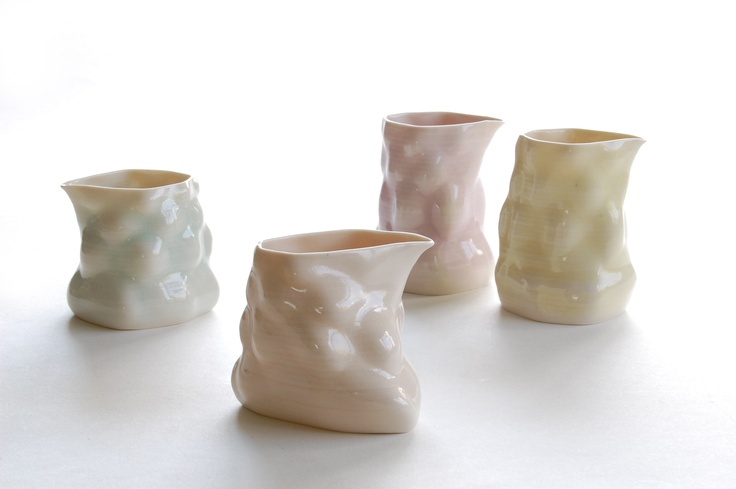 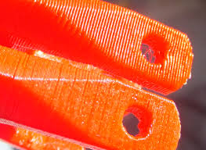
Nu hoeven we niet meer te sparen of veel tijd te steken om iets te maken met onze handen of trots te zijn omdat we iets hebben gekocht wat we een langere tijd graag wilde hebben. Ik heb het idee dat wanneer we allemaal een 3D-printer in huis zullen nemen, we alles zelf uitprinten, ongeacht het uiterlijk, als het maar snel, goedkoop en makkelijk is. Waar is de waarde van het product gebleven? Is dit het einde van het ambacht? Of is het maar iets tijdelijks, iets wat nieuw is, omdat we niet gewend zijn om binnen no-time een zelf geprinte kopje op tafel te zetten. Wat gebeurt er met de mensen die wel echt kunnen ontwerpen? 47
Naast nadelen zijn er natuurlijk ook voordelen van de 3D-printer, zoals het feit dat deze machine’s tot in de kleinste details dingen kunnen creëren die een ambachtsman nooit zou kunnen met zijn handen. Ze zijn oorspronkelijk gemaakt voor het verlichten van het ontwikkelingsproces voor de massaproductie. De studio’s waarin deze machines staan zijn vaak leeg en steriel en daarom is de sfeer heel anders dan we gewend zijn, namelijk veel lawaai, hitte, vuil en stof. Daarentegen heeft het de vaklieden overgehaald om deze technieken te onderzoeken. Omdat bijna altijd het met de machine gemaakte product moet worden afgewerkt met de hand of als mal figureert is er nog wel een toekomst voor de ambachtsman, deze is alleen niet detzelfde als deze nu is of in het verleden was. Dit houdt in dat ambacht ‘het bijwerken van machinaal gemaakte producten’ is? 48
3.5 Personalisation age
Samenwerken is dus een manier van de nieuwe ambacht. Het ambacht blijft nog behouden door de focus van waar je goed in bent. Maar wat is de invloed van de digitale technologie als smartphones, facebook die weet wat je leuk vindt en je tv-gids die programma’s aanraadt, die je misschien wel interessant lijken. Het lijkt erop dat alles persoonlijker wordt, de consument is hierbij het middelpunt, de aandachtstrekker, een nieuw tijdperk breekt aan. Bedrijven als Apple en Google zijn al een tijdje bezig met een manier bedenken om deze techniek meer te kunnen uitbreiden, het fenomeen genaamd; de ‘Personalisation Age’.Er is een verandering gaande in de evolutie van de data/techniek. In eerste instantie waren we bezig met het medium zelf, de bestanden. Het verkrijgen van informatie in het systeem en het rondbewegen van deze informatie. Nadat we dit aardig onder de knie hadden, begonnen we ons te verdiepen in de data zelf. Uiteindelijk hebben we deze informatie kunnen onderverdelen in groepen. Hierdoor is het beter te organiseren, maar ons systeem kan het nog steeds niet onafhankelijk begrijpen. Kennis is het echte doel en zal veel invloed hebben op de manier hoe wij ontwerpen. Het systeem heeft hierin de kennis, welke data het heeft, waar de data gevonden kan worden en wat de data betekent binnen een aantal unieke contexten. 49
De tijd is aangebroken voor een nieuwe ontwerp richting: één die is gespecialiseerd in data als het medium, met een humanistisch doel. Data is een buitengewoon rijk instrument dat steeds meer van cruciaal belang is, omdat het steeds meer door ons leven geweven is en alleen maar complexer wordt. Het is aan de data ontwerpers om deze data om te zetten naar iets goeds, iets moois, op een menselijke, begrijpende manier.
Wat je nu al in sci-fi films ziet is dat reclame ons, de consument, als doelgroep heeft. Hiermee bedoel ik dat reclame heel erg persoonlijk wordt, alleen op jou gericht. Google en Apple zijn al bezig dit fenomeen te ontwikkelen.
Een voorbeeld is iBeacon van Apple, een technologie die notificaties kan sturen naar nabije toestellen. Dit soort technieken maken het mogelijk een smartphone of een ander apparaat bepaalde acties (persoonlijke interesses) uit te laten voeren zodra het in de nabijheid van een iBeacon komt. Wat je krijgt is dat een reclamebord, waar je langsloopt, zich vormgeeft naar jouw interesses. 50
3.5.1 Individuele advertenties

Gladvertising
Een vorm van buitenreclame dat camera’s en gezichtsherkenning gebruikt om de stemming van consument af te lezen om zo een toepasselijke reclame speciaal voor deze persoon neer te zetten. 513.6 Een angstig bestaan?
Mijn angst is dat we alles gaan digitaliseren. Nostalgie zal nog wel aan de orde komen maar dan in een hele andere vorm. In een vorm van een website of app die zich aanpast aan jou interesses.
VOORSPELLING
Digitaal wordt vaak gezien als iets stijfs, snels en wiskundigs in tegenstelling tot de “menselijke” ambacht, waarbij tijd, geduld, hand gemaakt, uniek en de risico’s van mislukking centraal staan.
Wat we nu zien opkomen en wat alleen maar meer populariteit zal krijgen, is het combineren van deze twee media. Digitaal en ambacht zal zich gaan overlappen waarin bij het ene proces ambacht de boventoon heeft en andersom. Toch is het werken met de techniek van nu op de een of andere manier te vergelijken met ambacht. Omdat we midden in de evolutie zitten en machines niet tot in hun puntjes zijn uitgewerkt, zijn we nu vooral aan het experimenteren. Deze experimenten lijden weer tot bijzondere ontwerpen, net als wat er bij het ambacht gebeurde. Dit zou zo maar de nieuwe vorm van ambacht kunnen worden.
De vraag is of het ambacht aan het uitsterven is. Vele ontwerpers van nu merken dat ze de digitale generatie zijn, dus vinden ze het logisch dat ze de technische revolutie omarmen. Ze zien dit als hun ambacht. Of we het nou willen of niet, we leven in een digitale wereld. Daarom is het geen verassing dat het ambacht hierdoor ook wordt beïnvloed. Het is alleen te hopen dat het ambacht van nu en van vroeger niet wordt vergeten maar juist als inspiratiebron wordt gebruikt en hopelijk ook als uitgangspunt. Ik wil niet in een toekomst leven waarin handgemaakte stoelen alleen te bezichtigen zijn in een museum, ik wil ze gebruiken, zoals het ambacht dat bedoeld heeft; functioneel.
Mijn angst is is dat het niet meer nodig is om ontwerper te zijn. De consument bepaald wat er gemaakt wordt (personalisation age), print zijn eigen servies uit en bepalen samen met andere welke informatie zichtbaar is.
Wat positief is aan de technische revolutie, is dat we zo veel meer nieuwe machines, technieken en materialen kennen, dat onze wereld alleen maar meer en meer gevuld wordt met mooie en interessante ontwerpen. Dit is te danken aan onze geschiedenis; de industriële revolutie. Betekent het nu dat de eerste industriële revolutie niet ambachtelijk was, maar de tweede industriële revolutie die van de technische ontwikkeling juist nu nieuwe ambacht wordt?
Ambacht brengt gelaagdheid, een doel en geworteldheid in een ontwerp gemaakt met de techniek van nu en de toekomst.
Het ambacht staat voor het constante experimenteren en het verbeteren van het ambacht daarvoor. Het ambacht van de toekomst hangt af van wat het ambacht nu is. Een interessante gedachten omdat het ambacht hierdoor nooit echt vast staat en het onmogelijk is om te bedenken wat het ambacht in de toekomst zal zijn.